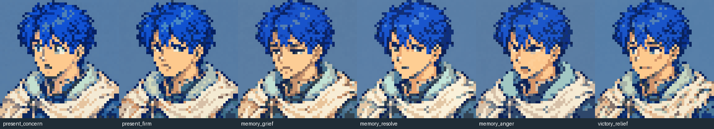
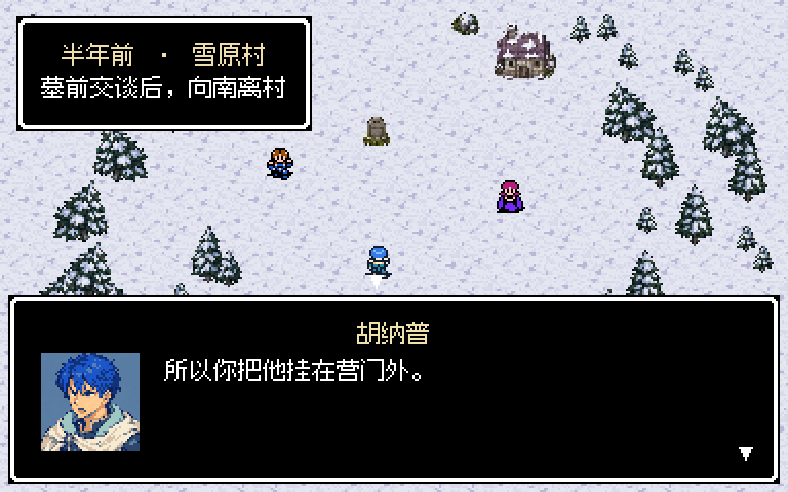
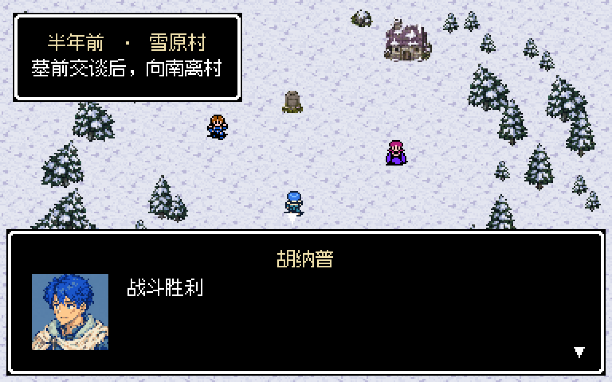
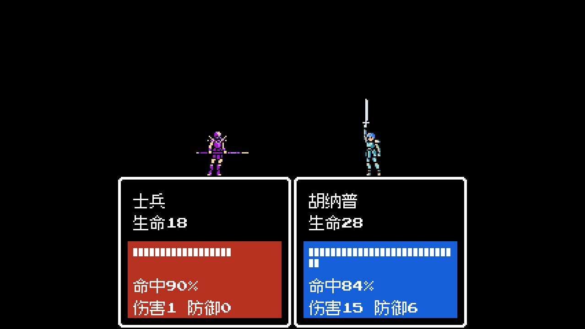
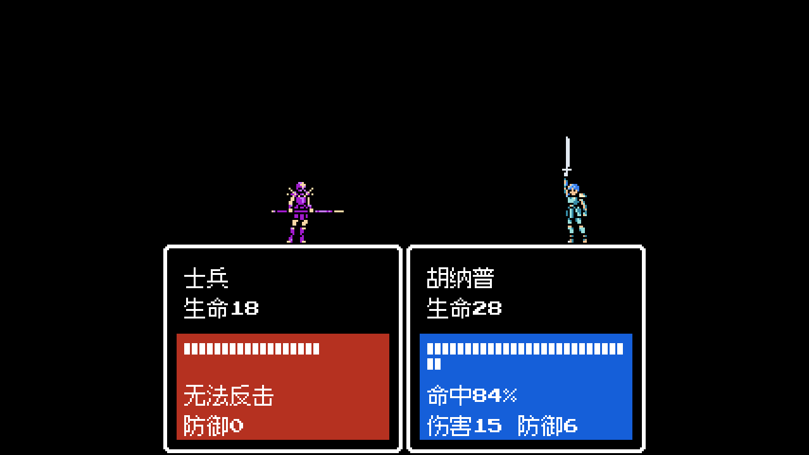
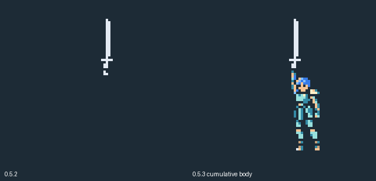
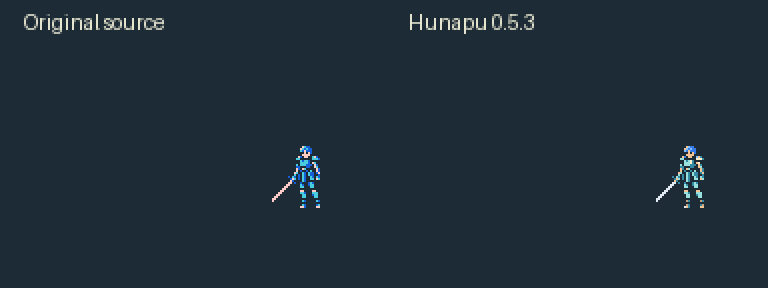
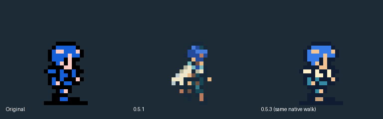
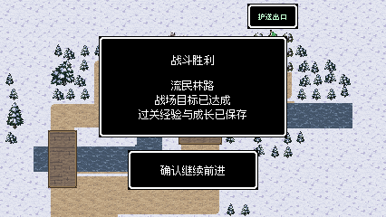

胡纳普表情与雷电剑修复 · 0.5.3
嘴形、眉眼随对白情绪变化；雷电剑准备和举剑时保留完整人物。新版应用仍在 actual/dist/RevengeMemories.app，可直接双击继续试玩。
6 种表情 · 9 句对白111 项针对性检查通过61 组渲染 · 48,077 像素零差异390 张雷电剑身体帧完整应用包 30 项检查通过
一轮真实按键试玩：从新游戏经过序章进入 M11，第 9 回合获胜，346 次按键，录到两次胡纳普完整攻击。全程后台视口录制，没有显示或激活游戏窗口。
实机对白里的表情

六种表情 · 原生像素对比顺序：惊疑、克制、悲伤、决意、怒意、释然。每张48×48、最多24色；保持蓝发、轻甲与短披风。

怒意 · 面对科兰D13 原对白渲染夹具“所以你把他挂在营门外。” 此图为定向表情检查。

释然 · 胜后阶段阶段预览夹具柔和眉眼与上扬嘴角。用于检查阶段画像，不是新增剧情对白。
行走与首关攻击
四方向行走真实按键行走保留原版双帧手脚动作，四个方向均录到两种步态。
M11 实际攻击真实按键战斗正常速度播放接近、挥剑、命中与回位，来自本轮关卡试玩。
雷电剑 · 人物持续保留
近距离雷电剑独立定向场景完整准备、举剑、雷电释放、命中和回位；人物身体与腿脚不再消失。
远距离雷电剑独立定向场景同一原装备动作，保持远距离站位和原单次伤害结算。

近距离举剑截图取自上方定向场景的实际引擎录屏。

远距离举剑截图390 张蓄力画面中，每张108个身体区域像素均完整匹配，包含命中震屏阶段。

同一帧的修复前后左：0.5.2局部图块被误当完整图片。右：0.5.3按原顺序累积写入，保留未更新的身体图块。
补充动作与原版骨架对比
以下普通、必杀、未命中、受击、濒死演示为独立定向场景，检查动作与结算边界；不计为自然关卡胜利。原版对比图只重放身体姿势表，不含实时战斗反馈。
普通剑完整动作原程序17，203 tick，单次接触。
必杀完整动作独立原程序18，263 tick，单次现行必杀结算。
未命中与回位
受击与恢复
濒死边界动作独立HP边界夹具。

原版普通动作逐帧对比
原版必杀动作逐帧对比

行走骨架保留本次沿用0.5.2已恢复的原生双帧动作。
本轮试玩与验证记录
 M11 开局从新游戏经过序章和D11自然进入。
M11 开局从新游戏经过序章和D11自然进入。

M11 第9回合获胜两组流民撤离、追击队长击败，无能力修改或强制胜利。
此轮完整关卡试玩仅M11；第二章没有重新完整通关。截图是引擎视口输出后整数倍放大，视频按录屏真实时间戳编码，均无柔化滤镜。演示视频无声。